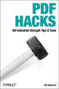

|  |
| About IR |
| Editors |
| Author instructions |
| Copyright |
| Author index |
| Subject index |
| Search |
| Reviews |
| Register |
| Home |
Steward, Sid PDF hacks: 100 industrial-strength tips & tools. Sebastopol, CA: O'Reilly, 2004. xvi, 278, [6] p. ISBN 0-596-00655-1 $24.95 £17.50
We seem to have a bigger clutch of products from O'Reilly than usual but, believe me, it is actually only a small proportion of their total output! And they do produce such very useful books that they are always worth looking at. The 'Hacks' series is designed to go beyond the manual (few of those, these days) or the Help screens, giving hints and tips that the author has developed, read about, or gleaned from one or other of his contacts.
I've always regarded the pdf format as something of a bastard—not because of any doubts about its paternity, but because it seems to be neither one thing nor another. If you want a print document then Word can do most of what Adobe Acrobat can do in terms of layout and so forth, and if you want a Web document, then html or xhtml will do a better job, because the layout of the document is not pretending to be a print document. Browsers some times have a difficult time dealing with them, for some reason or other, and they are slower to load than a Web page, as well as needing another application to read them. All in all, not my favourite format.
However, pdf is with us and many people use it to put documents on the Web, mainly I imagine, because it is easier to convert a Word document to pdf than it is to convert it to html. So, the Web is full of pdf files, some of them very useful. Steward's aim is to encourage us to tweak the format under various headings such as, Consuming PDF, Managing a collection and Manipulating pdf files, and even for a non-user like myself (except, that is, when I have to use them) there are some useful tips. You don't have to have Acrobat on your system for many of these, since Steward refers often to what can be done with third-party software.
I found Hack No. 4, Speed up Acrobat startup, useful. When Acrobat starts up it loads all the plug-ins available and this slows things down. All you have to do is to hold down the Shift key when you launch the program and this is prevented. However, it is much more useful to proceed to the next stage; that is, get rid of the plug-ins you don't use and may never use. Just transfer them into another directory, labelled appropriately, for example, 'Unwanted plug-ins' and Acrobat will be unable to load them.
Hack No. 20 deals with an interesting problem, 'Index and search local PDF collections on Windows'. To search pdf files, you generally need Acrobat or Acrobat Reader, since pdf files are a mystery to Windows. (I've just checked and they are also a mystery to Google Desktop, so that is not a solution - it will find pdf files, but will not find text within them.) Steward suggests using the Windows Indexing Service, a Windows component that I had never heard of before, and I don't think I'll bother to check. However, if you have a big collection of pdf files, it may be useful to do so. You will also need PDF IFilter, which is freely available from Adobe and which will work within the Indexing Service. The procedure takes up a total of seven pages in the book, so it is too complex to encapsulate here, but, if you persevere, you will be to use the Windows Search function (available on the Start menu) to search within pdf files.
There are many more useful ideas here, and some involve writing Javascript routines or Word macros, but the two examples suggest the wide range of possibilities provided. If you use pdf files a lot, then I suggest that you need this book.
Professor Tom Wilson
Editor-in-Chief
December, 2004
How to cite this review
Wilson, T.D. (2005). Review of: Steward, Sid PDF hacks: 100 industrial-strength tips & tools. Sebastopol, CA: O'Reilly, 2004. Information Research, 10(2), review no. R157 [Available at: http://informationr.net/ir/reviews/revs157.html]